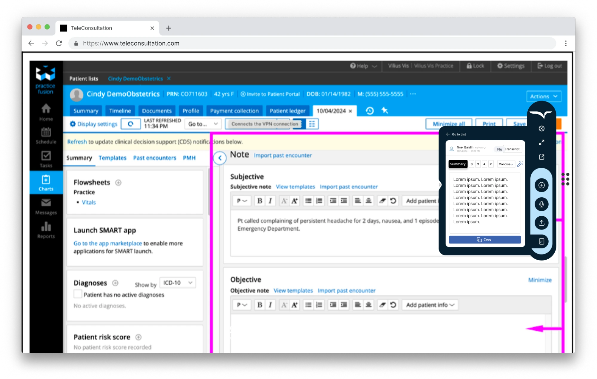
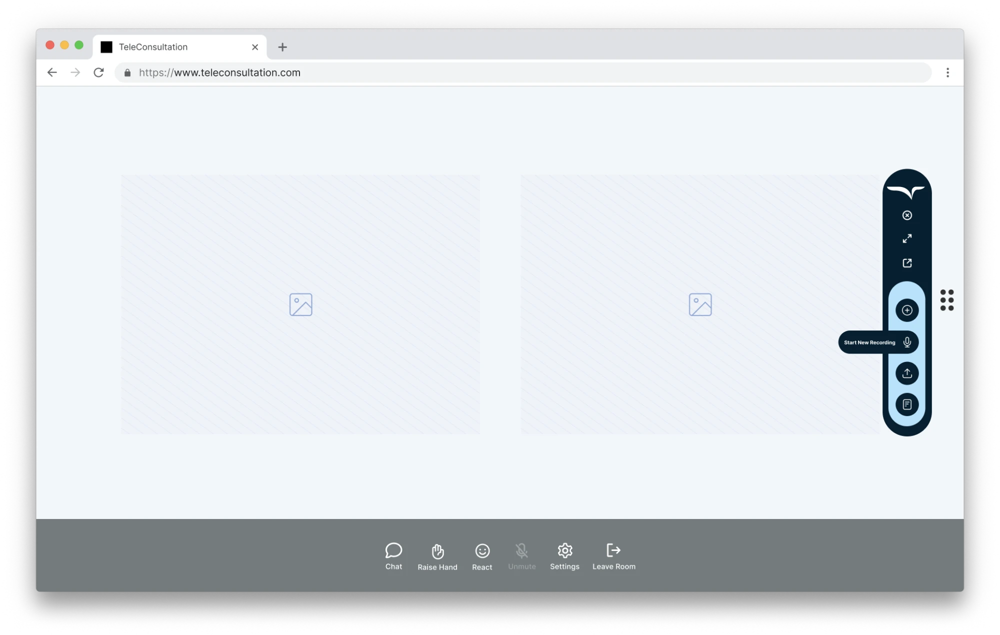
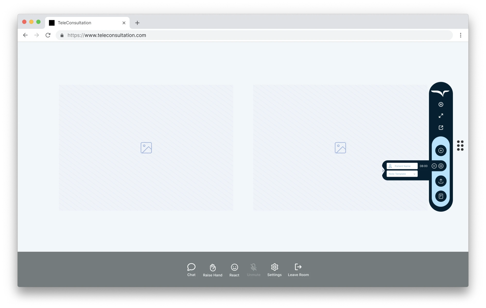
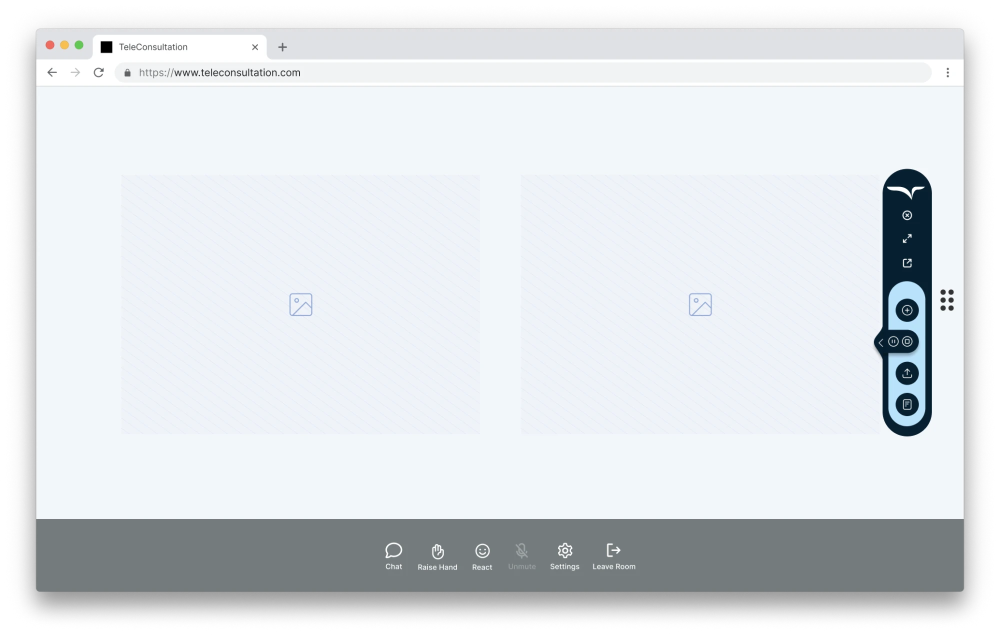
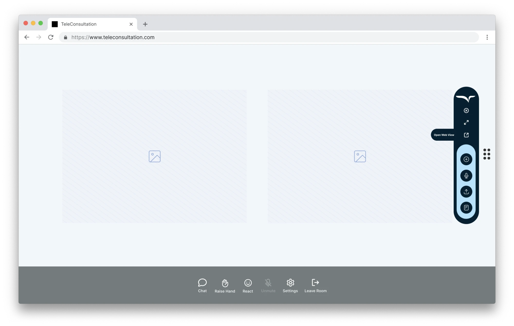
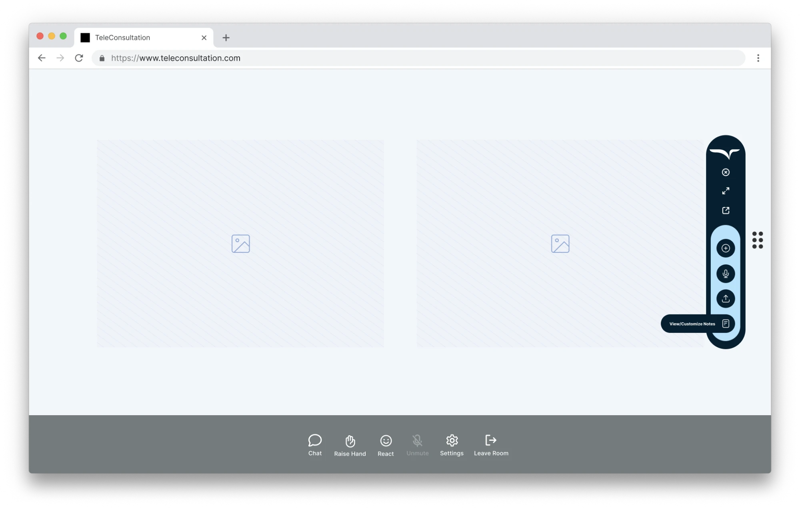
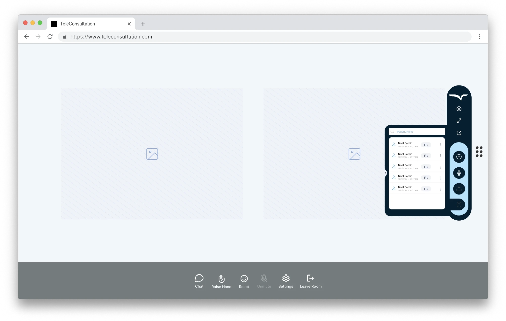
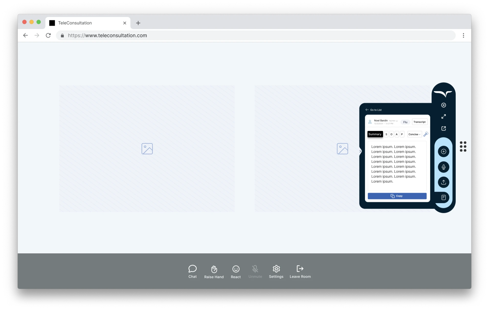

Transcripts into notes
Turn every recorded conversation into custom or template-based clinical notes.
Case study · Healthcare AI
UX discovery and design for the Freed AI browser extension. It records visits, writes the notes, and moves them into the EHR, so clinicians can spend their time on patients instead of paperwork.

The goal
Clinicians lose hours to documentation. The extension needed to record conversations and create transcripts automatically, then do four things well:
Turn every recorded conversation into custom or template-based clinical notes.
Keep track of every conversation with each patient, searchable in seconds.
Copy critical data into the clinician’s EHR or EMR without retyping.
Bring Freed AI into the browser, on top of the tools clinicians already use.
During the session




After the session



Design decisions
The toolbar sits on the screen edge, so it never covers the patient’s face or the EHR fields a clinician is typing into.
Once a session starts, controls shrink to a pause/stop pill. The clinician’s focus belongs to the patient.
One overlay works across telehealth platforms and EHRs, so there’s nothing new for clinics to integrate or learn.
Notes are structured in SOAP sections that map to EHR fields, so one click moves each part to the right place.
Process & outcomes
Placeholder: discovery and research, such as clinician interviews, the workflows you observed, and the insights that shaped the toolbar.
Placeholder: outcomes, such as time saved per visit, adoption, ratings or client feedback.
Have a product like this?